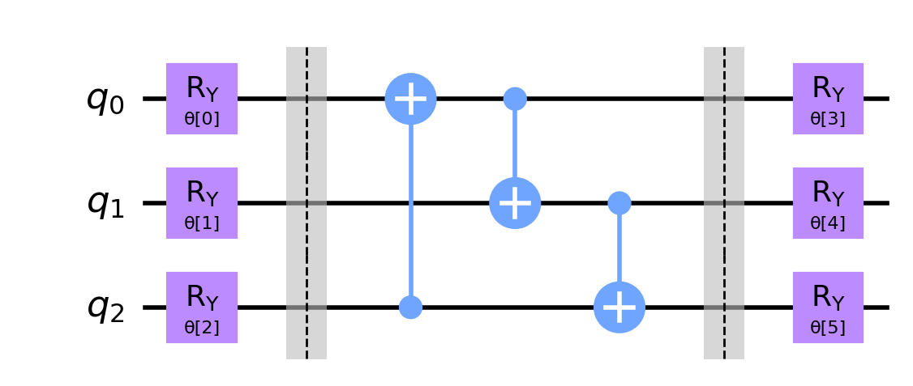

Imports#
import numpy as np
from qiskit import *
from qiskit.quantum_info import hellinger_fidelity
# Operators from Qiskit
from qiskit.quantum_info import SparsePauliOp
# Ansatz import
from qiskit.circuit.library import RealAmplitudes
# Runtime imports
from qiskit_ibm_runtime import QiskitRuntimeService, Sampler, Estimator, Session, Options
# Plotting tools
import matplotlib.pyplot as plt
import matplotlib_inline
matplotlib_inline.backend_inline.set_matplotlib_formats('retina')
Setup: Test circuit#
N = 3
ansatz = RealAmplitudes(num_qubits=N, reps=1, entanglement="circular", insert_barriers=True)
qc = ansatz.decompose()
qc.draw('mpl')

Qiskit Runtime Primitive: Estimator#
instance = "system-request/7-14-23-access/main"
service = QiskitRuntimeService(instance=instance)
# very similar to the Sampler construct. Only addition is the `observables` parameter
# estimator jobs need an operator
def run_with_estimator_in_session(circuits, observables, service, estimator_name, params=None, options=None):
"""Wrapper for running circuits with runtime Sampler inside a Session.
We will be re-using this construct a number of time. Therefore, it is warpped
insided a function for re-usability.
"""
with Session(service=service, backend=estimator_name) as session:
estimator = Estimator(session=session, options=options)
job = estimator.run(circuits, observables, parameter_values=params)
result = job.result()
session.close()
return result
estimator_name = "ibmq_qasm_simulator"
oper = SparsePauliOp.from_list([
("IIZ", 1.0),
("XIY", -0.5),
("ZYX", 1.0)
])
# create some random initial parameters
num_params = ansatz.num_parameters
np.random.seed(0)
init_params = 2 * np.pi * np.random.random(num_params)
reps = 5
res = run_with_estimator_in_session(
circuits=[qc]*reps,
observables=[oper]*reps,
service=service,
params=[init_params]*reps,
estimator_name=estimator_name
)
ideal_expvals = res.values # estimator returns expectation "values" whereas sampler returns "quasi-distributions"
ideal_expvals
array([-0.64075, -0.6555 , -0.67225, -0.656 , -0.6515 ])
Configuring Estimator Options#
options = Options()
options.optimization_level = 0
options.resilience_level = 0
options.execution.shots = 10000
res = run_with_estimator_in_session(
circuits=qc,
observables=oper,
service=service,
params=init_params,
estimator_name=estimator_name,
options=options
)
print(f"Ideal expectation values: {res.values}")
Ideal expectation values: [-0.6405]
Noisy Simulation with Runtime Estimator#
# fetch a noise model from backend
from qiskit_aer.noise import NoiseModel
backend = service.get_backend("ibm_peekskill")
noise_model = NoiseModel.from_backend(backend)
options.simulator.noise_model = noise_model
options.simulator.basis_gates = backend.operation_names
options.simulator.coupling_map = backend.coupling_map
res_noisy = run_with_estimator_in_session(
circuits=qc,
observables=oper,
service=service,
params=init_params,
estimator_name=estimator_name,
options=options
)
print(f"Noisy expectation values: {res_noisy.values}")
Noisy expectation values: [-0.566]
options.simulator.set_backend(backend) # avaialble from qiskit-ibm-runtime 0.11.2
res_noisy = run_with_estimator_in_session(
circuits=qc,
observables=oper,
service=service,
params=init_params,
estimator_name=estimator_name,
options=options
)
print(f"Noisy expectation values: {res_noisy.values}")
Noisy expectation values: [-0.578]
Error Suppression and Mitigation with Estimator#
Optimization Level |
Sampler and Estimator |
|---|---|
Level 0 |
No optimization and no error suppression |
Level 1 |
Light optimization and Dynamical Decoupling |
Level 2 |
Medium optimization and Dynamical Decoupling |
Level 3 |
Heavy optimization and Dynamical Decoupling |
Resilience Levels |
Sampler |
Estimator |
|---|---|---|
Level 0 |
No mitigation |
No mitigation |
Level 1 (default) |
M3 readout correction |
TREX readout correction |
Level 2 |
No mitigation |
ZNE (no readout correction) |
Level 3 |
No mitigation |
PEC |
Measurement Mitigation ( and Dynamical Decoupling)#
options.optimization_level = 3 # > 0 enables dynamical decoupling
options.resilience_level = 1 # measurement error mitigation with TReX
res_mitigated = run_with_estimator_in_session(
circuits=qc,
observables=oper,
service=service,
params=init_params,
estimator_name=estimator_name,
options=options
)
print(f"Mitigated expectation values (DD+TReX): {res_mitigated.values}")
Mitigated expectation values (DD+TReX): [-0.64260154]
res_mitigated.metadata[0]
{'variance': 2.058980211853376,
'shots': 10000,
'readout_mitigation_num_twirled_circuits': 16,
'readout_mitigation_shots_calibration': 8192}
ZNE#
options.resilience_level = 2 # level = 2 activates ZNE
from pprint import pprint
pprint(options)
Options(optimization_level=3,
resilience_level=2,
max_execution_time=None,
transpilation=TranspilationOptions(skip_transpilation=False,
initial_layout=None,
layout_method=None,
routing_method=None,
approximation_degree=None),
resilience=ResilienceOptions(noise_amplifier='TwoQubitAmplifier',
noise_factors=(1, 3, 5),
extrapolator='LinearExtrapolator'),
execution=ExecutionOptions(shots=10000, init_qubits=True),
environment=EnvironmentOptions(log_level='WARNING',
callback=None,
job_tags=[]),
simulator=SimulatorOptions(noise_model=<NoiseModel on ['id', 'x', 'measure', 'sx', 'reset', 'cx']>,
seed_simulator=None,
coupling_map=<qiskit.transpiler.coupling.CouplingMap object at 0x000001D4C6520450>,
basis_gates=['id',
'rz',
'sx',
'x',
'cx',
'reset',
'measure',
'delay']))
# Choices: 'TwoQubitAmplifier' | 'CxAmplifier' | 'LocalFoldingAmplifier' | 'GlobalFoldingAmplifier'
options.resilience.noise_amplifier = "LocalFoldingAmplifier"
# Noise factors can be floats. The factors must be >= 1
options.resilience.noise_factors = (1, 1.5, 2)
# Choices: 'LinearExtrapolator' | 'QuadraticExtrapolator' | 'CubicExtrapolator' | 'QuarticExtrapolator'
options.resilience.extrapolator = 'LinearExtrapolator'
res_mitigated = run_with_estimator_in_session(
circuits=qc,
observables=oper,
service=service,
params=init_params,
estimator_name=estimator_name,
options=options
)
print(f"Mitigated expectation values (DD+ZNE): {res_mitigated.values}")
Mitigated expectation values (DD+ZNE): [-0.52806667]
res_mitigated.metadata[0]
{'zne': {'noise_amplification': {'noise_amplifier': "<LocalFoldingAmplifier:{'gates_to_fold': None, 'noise_factor_relative_tolerance': 0.01, 'random_seed': None, 'sub_folding_option': 'from_first'}>",
'noise_factors': [1, 1.5, 2],
'values': [-0.5812, -0.6136, -0.6360000000000001],
'variance': [1.9142868, 1.8416141599999998, 1.87203064],
'shots': [10000, 10000, 10000]},
'extrapolation': {'extrapolator': 'LinearExtrapolator'}}}
import numpy
print(f"numpy version {numpy.__version__}")
import qiskit_ibm_runtime
print(f"qiskit runtime version {qiskit_ibm_runtime.version.get_version_info()}")
import qiskit.tools.jupyter
%qiskit_version_table
numpy version 1.23.5
qiskit runtime version 0.11.2
Version Information
| Qiskit Software | Version |
|---|---|
qiskit-terra | 0.24.1 |
qiskit-aer | 0.12.0 |
qiskit-ibmq-provider | 0.20.2 |
qiskit | 0.43.1 |
| System information | |
| Python version | 3.10.11 |
| Python compiler | MSC v.1934 64 bit (AMD64) |
| Python build | main, May 10 2023 18:51:25 |
| OS | Windows |
| CPUs | 8 |
| Memory (Gb) | 63.71001434326172 |
| Sat Jul 15 20:13:41 2023 Eastern Daylight Time | |